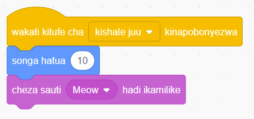

Bofya au tumia mishale menyu ya bloku za ‘Mwendo’.
Buruta na dondosha bloku ya ‘songa hatua’ kwenye eneo la kuandikia. Kisha iunganishe bloku ya ‘songa hatua’ kwenye bloku ya ‘wakati kitufe cha kinapobonyezwa’ kama inavyoonekana katika Kielelezo namba 43.
Bofya au tumia mishale menyu ya bloku za ‘Sauti’.
Buruta na dondosha bloku ya ‘cheza sauti hadi ikamilike’ kwenye eneo la kuandikia. Kisha unganisha bloku hiyo kwenye bloku ya ‘songa hatua’ kama inavyoonekana katika Kielelezo namba 43.

Maelezo ya programu fikivu ya Quorum: Bloku za programu zinaonyesha: kishale juu kikibonyezwa, songa hatua 10, kisha cheza sauti ya Meow hadi ikamilike.Kielelezo namba 43 kinaonesha kuweka bloku ya ‘cheza sauti hadi ikamilike’.
Baada ya hapo, rudia hatua zilizopita kuunda programu kwa ajili ya ‘kishale chini’, kama inavyoelekezwa kuanzia hatua ya 8.
Bofya au tumia mishale menyu ya bloku za ‘Matukio’.
Buruta na dondosha bloku ya ‘wakati kitufe cha kinapobonyezwa’ kwenye eneo la kuandikia kama inavyoonekana katika Kielelezo namba 44. Iweke bloku hiyo kwenye upande wa chini wa eneo la kuandikia. Kisha, chagua ‘kishale chini’.